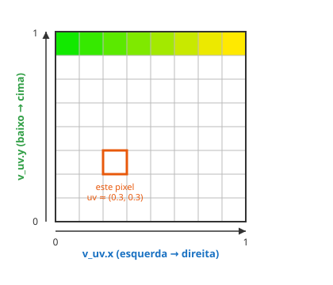

← Mapa do curso · Marco 1 · Módulo 2 de 6
No módulo passado você pintou a tela inteira de uma cor só. Bonito, mas meio sem graça — todo pixel recebeu exatamente a mesma cor. Agora vem o pulo do gato: e se cada pixel decidisse a própria cor a partir de ONDE ele está na tela? É assim que nasce um gradiente — e, mais pra frente, qualquer imagem.
Lembra que o shader roda uma vez por pixel? Pois é: em cada uma dessas execuções, o pixel sabe
onde ele está. Esse endereço chega pra gente numa variável chamada v_uv —
são dois números:
v_uv.x → posição na horizontal: 0.0 na borda
esquerda, 1.0 na borda direita.v_uv.y → posição na vertical: 0.0 embaixo,
1.0 em cima.Repare: não é "pixel 0, pixel 1, pixel 845". É sempre um número de 0 a 1, não importa se a tela é grande ou pequena. A isso chamamos coordenada normalizada.

(v_uv.x, v_uv.y), sempre entre 0 e 1.O playground abaixo pinta cada pixel com a cor vec3(v_uv.x, v_uv.y, 0.0). Ou seja:
quanto mais à direita, mais vermelho (R = v_uv.x); quanto mais pra
cima, mais verde (G = v_uv.y). Azul fica zerado. Dá Test Drive
e veja o gradiente aparecer. Depois, mexa na expressão e clique Test Drive de novo.
Sem rodar — preveja: o que aparece se você trocar a cor por
vec3(v_uv.x, 0.0, 0.0)? E por vec3(v_uv.y, v_uv.y, v_uv.y)?
1ª: ________________________________
2ª: ________________________________
Agora teste as duas no playground. Bateu com sua previsão?
v_uv é esse lugar
normalizado de 0 a 1. O mesmo pixel pode ser "coluna 845" numa tela e "coluna 1690"
noutra — mas o v_uv.x dele é o mesmo nas duas.v_uv? Eu não declarei.varying, declarado nos
bastidores). Por enquanto: é de graça, use à vontade.v_uv ≈ (0, 0), então R=0, G=0, B=0 = preto. Cada canto
conta uma historinha sobre as coordenadas. 😉v_uv (sempre de 0 a 1). Quase todo bug de
iniciante neste módulo é misturar os dois. Se a conta dá 320 ou 845, você está pensando em pixel;
se dá 0.5, está pensando em coordenada — e é coordenada que a gente quer.
v_uv (dois números de 0 a 1).v_uv.x = horizontal (0 esq → 1 dir); v_uv.y = vertical (0 baixo → 1 cima).Seu desafio: faça um gradiente horizontal que vai de vermelho
(na esquerda) até azul (na direita). Dica forte: a função
mix(a, b, t) mistura a cor a com a cor b conforme t
vai de 0 a 1. E você já tem um número que vai de 0 (esq) a 1 (dir)... qual é mesmo? 😉
Edite a expressão da cor, dê Test Drive e clique Conferir.
Ligue cada termo ao seu significado (escreva a letra):
v_uv.x A. mistura duas cores conforme um número de 0 a 1mix C. espremer uma medida pro intervalo [0, 1]← Anterior: Shaders & a GPU · Próximo: Matemática que Vira Imagem →